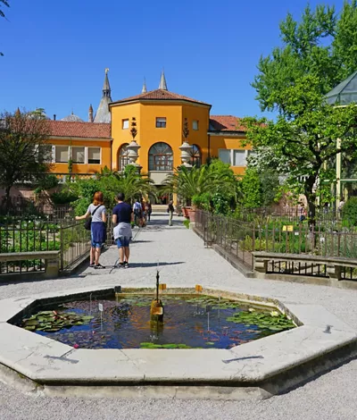
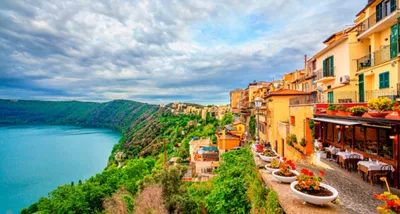
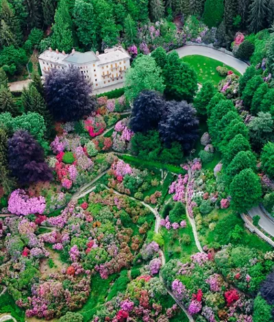
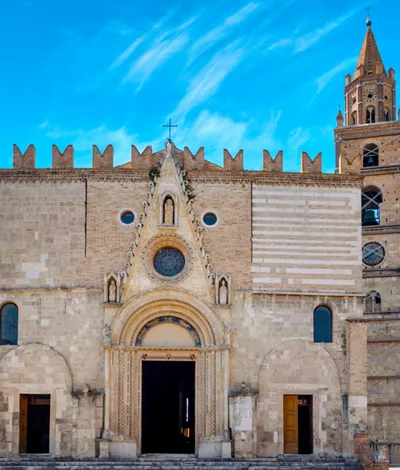

Lugares imprescindibles

UNESCO
El Jardín Botánico de Padua
El más antiguo del mundo, ahora Patrimonio de la Humanidad.
3 minutosMaravillosa Navidad 2024
La mágica atmósfera navideña envuelve el Belpaese con eventos únicos.
5 minutos
Espiritualidad
Sacro Monte de Lainate
Descubre este tranquilo lugar lejos de los típicos viajes urbanos.
10 minutos

Arte y cultura
El parque de los Castelli Romani
Pueblos que se reflejan en las aguas de los lagos volcánicos, villas señoriales, yacimientos arqueológicos y deliciosas tradiciones gastronómicas.
5 minutos

Naturaleza
6 localidades de norte a sur donde hacer «forest bathing» y encontrarnos a nosotros mismos
Descubre los lugares imprescindibles donde hacer «forest bathing» en Italia y sumergirnos en la naturaleza para encontrarnos a nosotros mismos.
2 minutos

Ciudades culturales
Téramo, fusión de naturaleza e historia
Entre el mar Adriático y el Gran Sasso, en una zona rodeada de olivos e hileras de viñedos, se encuentra Téramo, considerado uno de los pueblos más bellos de los Abruzos.
4 minutos